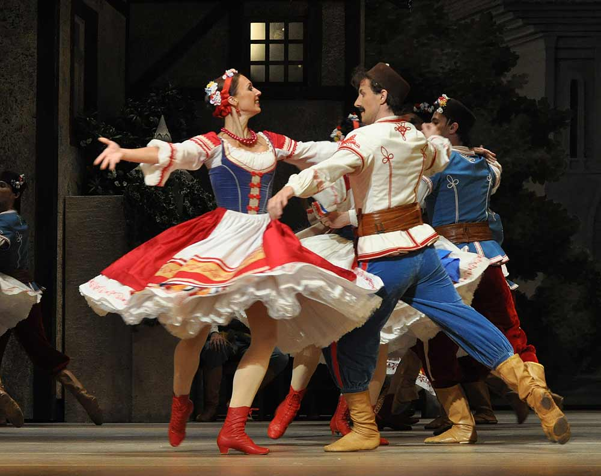

CHIHUAHUA!!. LA DANZA DEL VENADO!!, La danza del venado tiene un origen prehispánico. Esta danza se le atribuye
principalmente a los grupos étnicos Yaquis y Mayos de el área de sonora aunque lo vemos también en los grupos
Rarámuris de Chihuahua.lleva atada sobre su cabeza, cubierta por una manta blanca que cubre hasta sus ojos, una
cabeza de venado disecada.
LA POLKA: La polka proviene de Polonia y es una danza que llegó al estado de Chihuahua durante la época de la
Colonia.
Es común ver en festivales o fiestas a las mujeres usando un vestido de tela de mascota grande, rojo y blanco, con
mucho vuelo, manga en forma de bomba y el cuello alto con pechera de encaje y pasalistón.
Usan también una cinta ancha en la cintura que se ajusta con un moño, zapatos negro o botas norteñas.
Los hombres, generalmente, bailan con camisa a cuadros paliacate, pantalón vaquero, botas y sombrero norteño.
Entre las polkas y corridos revolucionarios más famosos están: Adelita, Marieta, Juana Gallo, Rielera, Revolcada y
Jesuita.

LA MAZURCA :Originalmente la Mazurca era un baile de salón de la corte real y la nobleza polacas y de la misma
manera llegó a la cultura del estado de Chihuahua, aunque con el tiempo la clase popular la adoptó por completo.
Se baila en pareja y es una danza de carácter animado y de mucha gallardía.
EL VALS: Esta danza llegó a México entre los años 1810 y 1815 y fue adoptada de forma rápida por la población de
Chihuahua.
Con la independencia en el año 1821 llegaron al continente expresiones culturales con gran influencia alemana y
vienesa que fueron adoptadas dentro de las tradiciones de la región.
Su cadencia logró numerosos seguidores que pronto adoptaron su ritmo para realizar nuevas composiciones.
BAILE
VIDEO
ÉPOCA DEL AÑO
La Danza del Venado
Esta danza es originaria de la cultura Yaqui y Mayo en el estado de Sonora, México. Se realiza
principalmente durante las festividades del Carnaval, que suelen celebrarse entre febrero y marzo.
La Polka
Aunque la polka no es exclusiva de México y se baila en varias partes del mundo, en México se puede ver en
festividades como las Fiestas Patrias (15 y 16 de septiembre), así como en otras celebraciones regionales a lo
largo del año.
La Mazurca
La mazurca es un baile de origen europeo que se ha adoptado en México y se puede ver en eventos sociales y
festividades durante todo el año, especialmente en regiones con influencia europea, como en algunas zonas del
norte de México.
El Vals
Al igual que la mazurca, el vals es un baile que se puede ver en eventos sociales y festividades a lo largo
de todo el año. En México, se baila comúnmente en bodas, fiestas de quince años, y otras celebraciones
importantes.